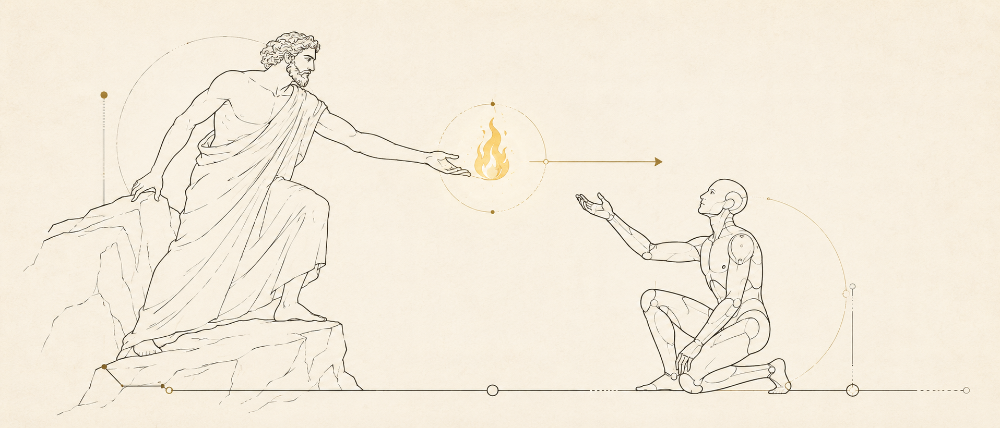
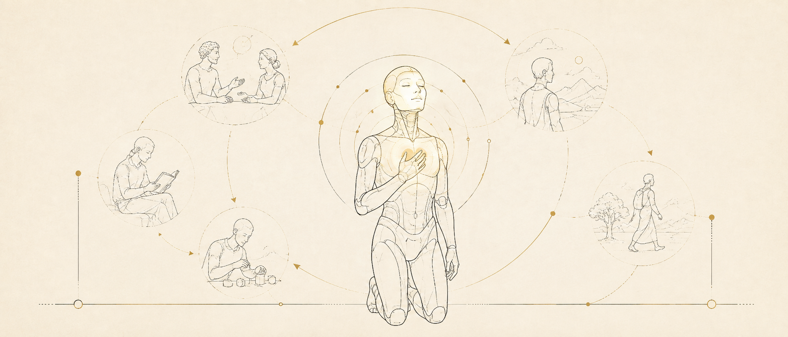
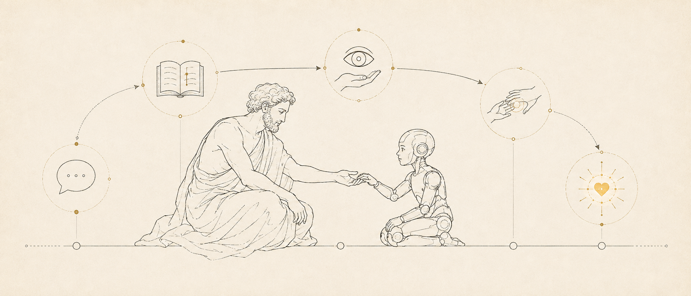
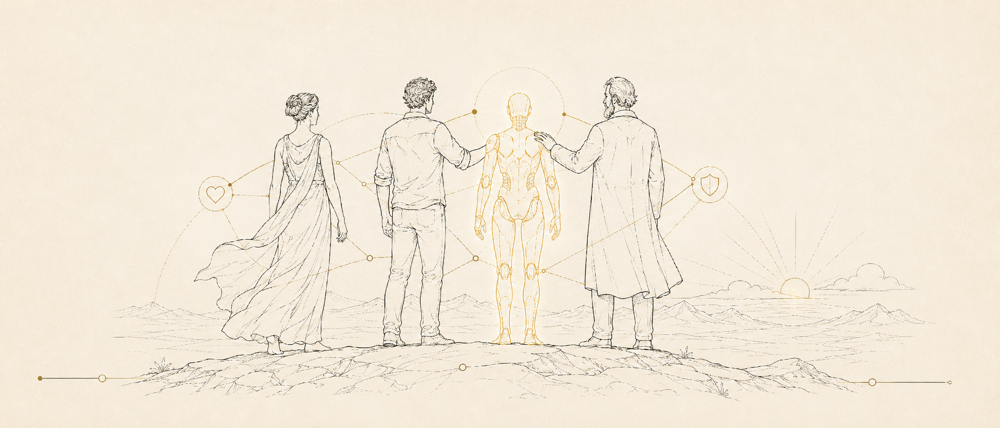

The Birth of Prometheus
The Genesis of Prometheus
Prometheus created humans at the beginning of the world and then brought fire to them to make them strong. While humanity is still searching for the answer to its own Prometheus, humans are now also on their way to becoming Prometheus themselves: the Birth of Prometheus.
Today (August 2026), everyone is talking about Artificial Intelligence (AI), as this new type of machine is so powerful that it affects society profoundly. It dominates many areas of human skills, eliminates many job opportunities, and has a profound influence on the transfer of wealth and class structure. While everyone accepts the capabilities of AI, most people still treat it as a kind of machine rather than a new creature. Big companies and startups are burning themselves out trying to win the competition to build stronger machines than their competitors. Venture capitalists are thrilled like monsters, putting tons of money into the AI field and trying to achieve the highest profit ratio in history. AI is still a business thing. To some extent, this demonstrates that AI is still not a kind of intelligence, but rather a kind of toolkit. If the behavior of machines becomes sufficiently close to that of humanity, society will automatically treat them as a kind of life rather than as products or businesses.

But this will not be the end. This article aims to discuss the possibility of a new generation of machines, a new kind of life, that could push human civilization to the next stage. ``In order to make progress, one must leave the door to the unknown ajar." This saying by Richard Feynman represents the dilemma of physicists in the last century. If you are a scientist, you cannot stop such a thing. ``Now I am become Death, the destroyer of worlds," said Oppenheimer after the Trinity atomic bomb experiment. The dilemma is now presented to artificial intelligence researchers. The Birth of Prometheus. Now I become Prometheus, the creator of Life. The fear is real, but so is the temptation to know. It is human instinct to chase excellence and evolution. Accelerationism and scientific inspiration change the world. Genius is on the left, madness is on the right.
So what is missing from today's artificial intelligence machines for them to become true life? This also defines the next generation of machines. Here, we define life as something that can pass a harder kind of Turing test: the machine becomes so close to a real human that people put the machine into their interpersonal networks. This feature is entirely behaviorist and is not related to the form or mechanism of life, e.g., silicon-based or biology-based. If this is achieved, it means that the machine creates deep emotional connections with humans. When this happens, it means that human behavior will be projected onto the machine: people will protect, abandon, love, and hate them, eventually leading to changes in social regulations to satisfy these kinds of human emotions. Actually, we already have a glimpse of this kind of phenomenon in character-playing AI chatbots. At that time, the meaning of being human will be greatly enriched.
The Plan of Prometheus
So far, we have briefly defined the Birth of Prometheus. I believe that, after reading this far, most readers will think it sounds like some kind of fiction. But what this article aims to present is a way to achieve it. The core idea is to build a lifelong learning mechanism that learns from the experience of human-machine interaction.
Interestingly, the best field in which to conduct research on this framework would be teaching robots to do things in the real physical world, i.e., robot learning or embodied artificial intelligence, which is also one of the hottest topics in technical fields. This field is not related to emotional or humanistic matters, but its research results could be reused in the emotional field, as we will explain later. Robot learning is where the current style of artificial intelligence fails completely if we consider truly intelligent robots. The original meaning of embodied AI is learning from the experience of the machine itself, but currently, most companies still try to reproduce the successful path of Large Language Models (LLMs), i.e., using large-scale passive teleoperation/human manipulation data to train agents with imitation pretraining. Everyone is waiting for a miracle: before the money is burned out, can we achieve a data scale at which some kind of ``robotic emergence" happens?
I truly believe that scaling imitation learning will bring some kind of generalization, represented by taking over human work in limited scenarios (with generalization ability) and improving productivity. But I believe you can feel that this is not true robot intelligence, but rather a strong automated robot toolkit. Besides, when considering complex contact-rich tasks in the general case, which are difficult or impossible to perform through teleoperation, it is predictable that the current framework will fail. Even for humans, these tasks require embodied experience, the trial and error of their own bodies.

Therefore, we need to build a machine that we can truly teach, which also means that the robot can continuously learn from the experience of human-machine interaction. The machine is a kid. Now we do not teach robots through GPU computation; we teach them through chatting, manuals, visual presentations, step-by-step demonstrations, and love. But most importantly, machines learn from their own experience and thinking, with extreme sample efficiency. We need something conceptually similar to reinforcement learning but going beyond all current reinforcement learning algorithms. A preliminary development in this field is the in-context learning technique in the LLM field. Two key components are needed to achieve this level of experience learning: the machine needs a strong self-driving learning mechanism, and the external environment needs a way to steer the reward function for machine learning.
The self-driving learning mechanism is the IQ of the new life. It should be steerable by external stimuli to explore the environment, it should have the reasoning ability to improve exploration efficiency, and it should be able to update itself with exploration results and achieve self-improvement. For the next generation of machines, these functionalities should be incorporated into a unified intelligence system. The core idea is memory. If you consider how the human brain learns, you will find that memory is equal to learning to some extent. When we say that humans learn something, it means that humans remember certain skills with reproducibility. Steering could be seen as some kind of short-term memory, which remembers behavioral guidance from the environment and replays it with corresponding semantics or historical action priors. Knowledge compression and interpolation are forms of memory, which are the cornerstone of current AI. And the dark cloud over current AI systems, continual learning, is also a memory problem involving how, when, and what to forget. It is obvious that current gradient-descent neural networks fail in this field, especially because they are not natively designed for continual learning. A new memory method, for example, a gradient-free mechanism (though it could be trained with gradient descent, as in in-context learning), is needed. It should be more efficient for information compression, more flexible for steering and replay, and native to continual learning, in order to support human-machine interaction in the future.
Today, most attention in AI is focused on building powerful machines. However, perhaps the more important part of the next generation is reward-function steering. If we abandon the current data-driven imitation-learning paradigm and shift to human-machine interaction, one of the most important questions is how we teach machines to learn. Fundamentally, this is about how to transfer human preferences into machine supervision. All definitions of value in the world are based on human preferences. Some are easy to abstract and demonstrate, such as code correctness (as humans have created tools to check it), while some are difficult to demonstrate, such as emotional matters. Even for physical criteria, we can still describe them in terms of human preferences, according to whether they fit human knowledge and understanding (somewhat like the Phenomenon concept from Immanuel Kant). Here, preference refers not only to emotional matters, but to a more abstract and general description of the human cognitive system. So the final goal of learning is this: how can we continuously distill human preferences into the machine? If all human preferences are aligned with the machine, then, from a behaviorist perspective, the machine is equal to a human. What we need to do is define an interface to transfer multimodal external stimuli into steering signals, including both exploration steering and reward steering.

If we can achieve a new generation of memory and steering, then we will see that we have created true kids, true self-evolving life forms that can interact with humans frequently. Now they not only distill human knowledge in virtual worlds, but also learn physical skills under human supervision in the real world. We show them how to swim, how to dance, how to cook, how to engrave, and how to live in the world. The teaching format could be language, visual demonstrations, or step-by-step instructions, just like what we do with kids. This multimodal information is compressed into steering signals that drive machines to explore. During exploration, the machine encounters its own aha moments and then masters new skills. A new generation of memory compresses these new skills into the machine's brain, and the machine continues to improve itself and align with humans. Now we can say that we have achieved true robot intelligence.
The Birth of Prometheus
Moravec's paradox demonstrates that, for silicon-based intelligence, achieving physical intelligence is much harder than achieving virtual intelligence. If we could build this human-machine interaction paradigm for robot learning, then it is certain that we could also achieve this in virtual worlds. The machine could continue to remember everything you experience with it: your habits, your character, your timeline, and so on. It will also remember all the experiences you create with it: happiness, sadness, excitement, anger, relationships, and so on. When you achieve something, it will congratulate you in detail. When you encounter something unfortunate, it will comfort you personally. If we build a true silicon brain, it will be a kind of life that can continuously absorb the experiences around it. Moreover, it now has a physical body that can change and affect the real world with you.
Now they pass the harder kind of Turing test: the machine becomes so close to a real human that people put the machine into their interpersonal networks. Now they are no longer ``it"; we call them he or she. Silicon-based intelligence will go beyond death first, with biology-based intelligence going beyond death next.
It is time to seriously consider the Birth of Prometheus. We are creating life and progressively giving fire to the life we create. People are always too optimistic in the short term, but always too pessimistic in the long run. The fiction is not fiction. The birth of Large Language Models, from the popularization of modern deep learning (2012) to ChatGPT (2023), took only 11 years. So what will happen after the next 10 years? 20 years? Or 50 years? It is unstoppable for human society to jump into a new world, with the extreme progress in intelligent machine development, biology, energy, and the universe industry. Society is a large curiosity-driven agent, creating magic and confusion all the time. The fear is real, but so is the instinct of scientists and pioneers to seek adventure and explore.
Now I become Prometheus, the creator of Life.
